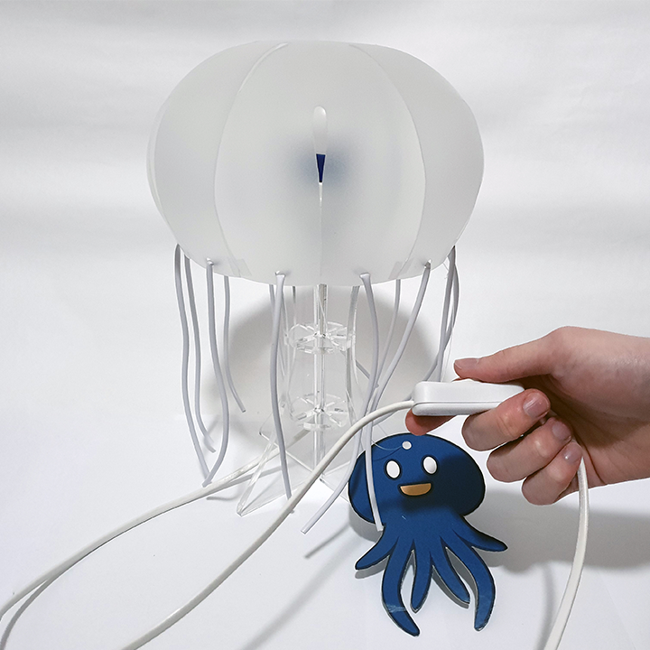

Leonardo Galasso Dobarro
Brasileiro, Solteiro, Nascido 4 de Junho de 1998
Endereço: Rua Marechal Deodoro da Fonseca n° 824, Centro, Jundiaí, SP. CEP: 13201-002
Telefone: (11)4521-4872 / Celular: (11)98206-4523
E-mail: ghostlyraspberry@gmail.com
OBJETIVOS
- Estágio em Design Gráfico e Estágio em Animação Gráfica - Cargo de interesse
FORMAÇÃO
- Curso Superior de Design - Cursando
Universidade Presbiteriana Mackenzie
Mês e ano de início: 07/2018. Mês e ano de previsão de término: 12/2021
PROJETOS
- Jolly Roger: Jogo de tabuleiro com temática de piratas para o ensino de geografia física a estudantes dos 8° e 9° anos do Ensino Fundamental II.
- Aurelia: Abajur lúdico desmontável destinado à um público infanto-juvenil inspirado na forma da água-viva Aurelia Aurita.


LÍNGUAS
- Português: Nativo
- Inglês: Fluente
- Espanhol: Básico
COMPETÊNCIAS
- Informática:
- Software: Photoshop, Illustrator, InDesign, AutoCAD
- Sistema Operacional: Windows 7, Windows 10
- Linguagens de Programação: HTML5
- Cursos:
- Desenho artístico. Alfa 2 Estúdio, 2015
- HTML básico. CodeAcademy, 2014
Cozinhar "Minute Rice" em 59 segundos